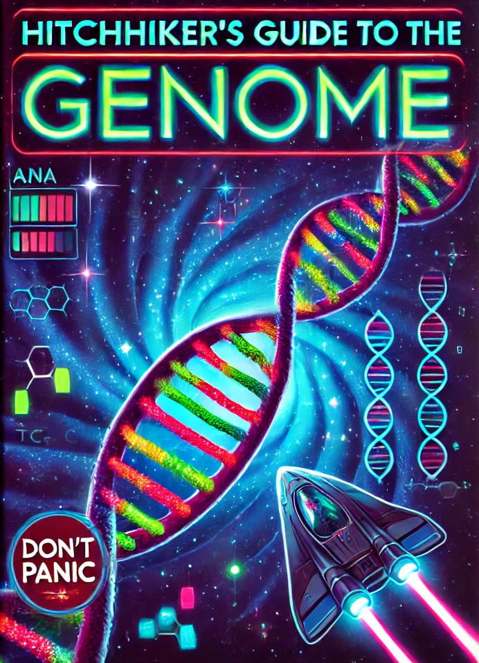

A mostly harmless bioinformatics textbook — from DNA to databases, alignments to AI, in 621 pages of signal over noise.

Born as a collaborative writing project with the Bioscience Engineering class of 2024 and edited into a complete course text, the Guide walks from the molecular basics all the way to genomic foundation models — with code, weblems and a healthy dose of humour.
Databases, file formats, score matrices and alignments (Needleman-Wunsch, Smith-Waterman, BLAST, BWA) explained from first principles.
Phylogenetics, molecular clocks, protein folding, HMMs, gene prediction and the grammar of genomes.
Comparative genomics, drug discovery, personalized medicine and the rise of AI in the life sciences.
A full appendix: Python in 42 minutes, Biopython, VS Code, Git, Copilot and the Bioinformatics Programming Challenge.
Grammar of graphics, ggplot, sequence and macromolecular visualization for real biological data.
Written collaboratively with students using generative AI — and transparent about every error, including the cover.
"In the beginning the Genome was created. This has made a lot of people very confused and been widely regarded as a good place to start."
— in the spirit of Douglas Adams
The full textbook is openly licensed and free to read online. Prefer paper? Order a printed copy and keep the Guide within arm's reach for your next exam — or your next genome.
This is the official text for Bioinformatics at the Faculty of Bioscience Engineering, Ghent University (2025–2026). Pair it with the lecture screencasts, weblems and the Programming Challenge Hall of Fame.
See the full syllabus →